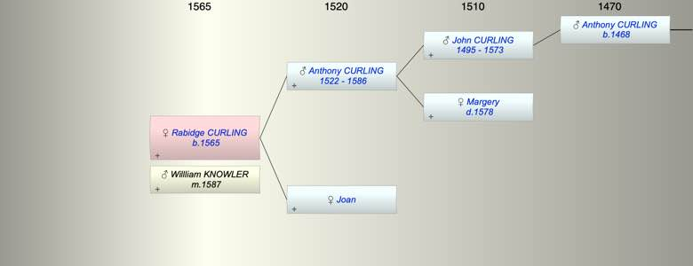

| [Index] |
| Rabidge CURLING (1565 - ) |
|  |
| b. abt 1565 |
| m. 20 Nov 1587 Willliam KNOWLER |
| Parents: |
| Anthony CURLING (1522 - 1586) |
| Joan |
| Siblings (5): |
| Joan CURLING (1555 - ) |
| Thomas CURLING (1557 - 1593) |
| John CURLING (1559 - 1611) |
| Margery CURLING (1561 - ) |
| Anthony CURLING (1562 - ) |
| Events in Rabidge CURLING (1565 - )'s life | |||||
| Date | Age | Event | Place | Notes | Src |
| abt 1565 | Rabidge CURLING was born | ||||
| 1586 | 21 | Death of father Anthony CURLING (aged 64) | St Laurence | Note 1 | |
| 20 Nov 1587 | 22 | Married Willliam KNOWLER | at St L ex FMP | ||
| Death of mother Joan | 1582 or 1588 at St L? | ||||
| Note 1: buried 26 Aug 1586 at St L ex FMP PR |
| Created on a Mac™ using iFamily for Mac™ on 8 Oct 2023 |